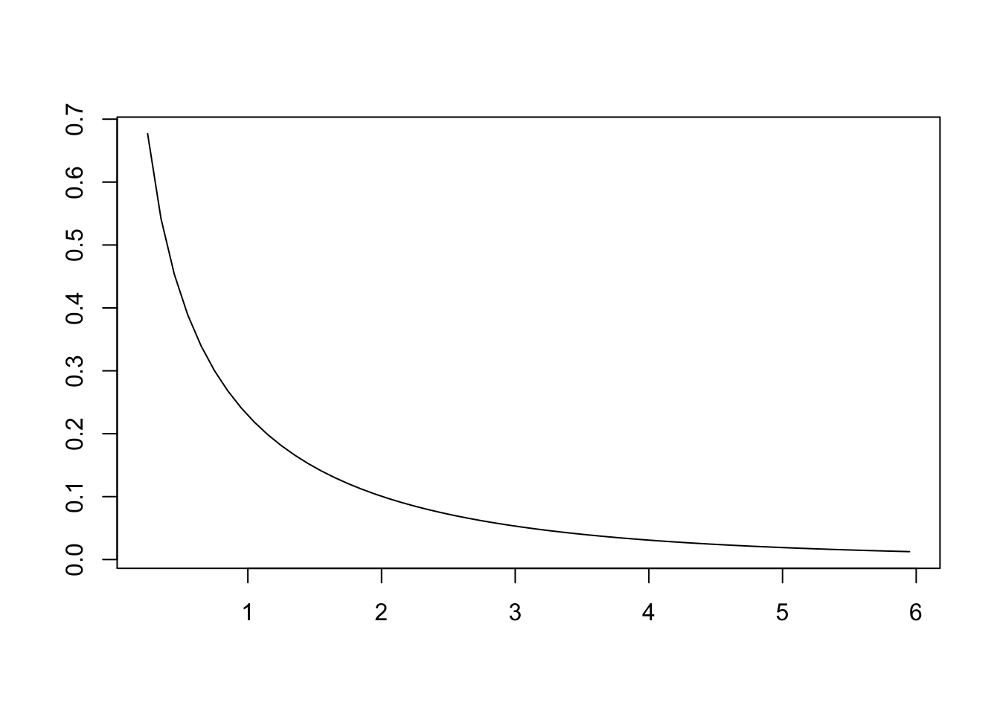
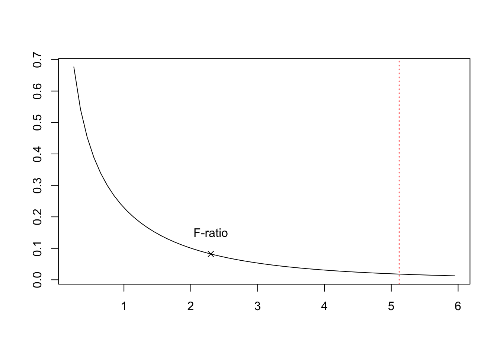
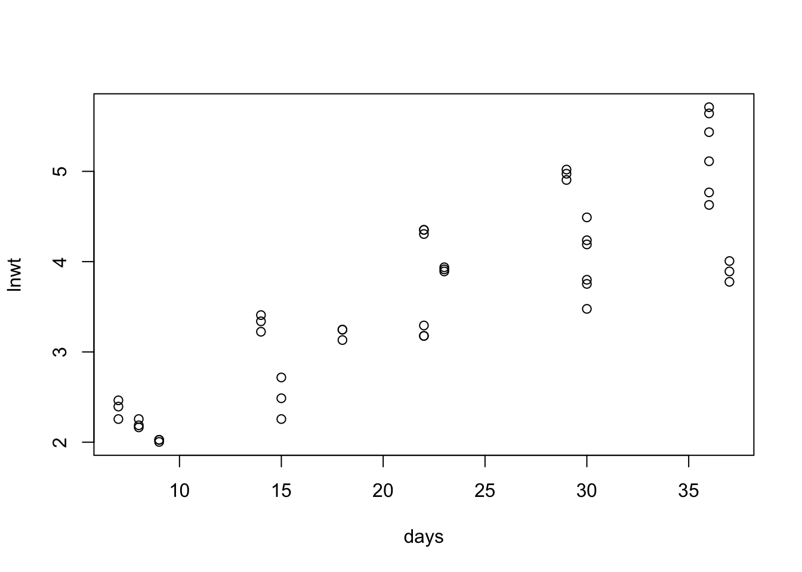
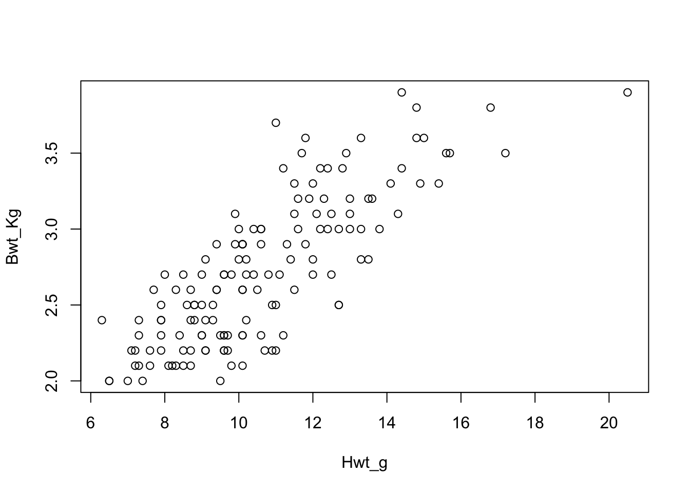

Chapter 1 Linear Regression
1.1 Learning Objectives for Chapter
- For a simple linear regression, state the null and alternative hypotheses.
- Describe how variance is partitioned in a linear regression.
- Calculate the slope and intercept for a regression model and their CIs, and interpret what the values mean in real, biological terms.
- Calculate the coefficient of determination and state what the value means.
- Describe how ANOVA and regression analyses are related in terms of variance partitioning and the F test.
- List examples of uses for simple linear regression (SLR).
- Write the model and assumptions for simple linear regression.
- Make confidence intervals for the SLR parameters.
- List strategies to increase the precision of slope estimates.
- Determine is a problem requires an estimate for the expected value or for a single observation.
- Calculate and interpret an ANOVA table for SLR.
- Discuss the difference between estimating parameters and making predictions in SLR.
1.2 Introduction to Simple Linear Regression
In simple linear regression, we are interested in the relationship between two continuous variables. More specifically, we are interested in how one variable (Y, the dependent variable) changes with each unit change in another variable (X, the independent variable). First, we construct a linear mathematical model that describes the change in Y with each unit change in X. This linear model takes the following form: \[\hat{Y}_i = \beta_0 + \beta_1X_i + \epsilon_i \\ \epsilon_{i} \sim N(0, \ \sigma^2)\] where \(\hat{Y}_i\) is the predicted value of variable Y for a particular (i) value of variable X. The variable \(\epsilon_i\) represents the random observed deviation from the model’s theoretical, predicted value of Y, and it is normally distributed with mean 0 and variance \(\sigma^2\). Each random deviation from \(\hat{Y}\) (\(\epsilon_i\)) is called a residual.
We use observed values of X and Y to estimate the parameters \(\beta_0\) and \(\beta_1\). These are called the regression coefficients, and they have their own special interpretations. The \(\beta_0\) coefficient is also called the intercept, and if you examine the regression model closely, you might realize that \(\beta_0\) is simply \(\hat{Y}_i\) when \(X_i\) is equal to 0. The \(\beta_1\) coefficient is also referred to as the slope, and it is a rate parameter that represents the change in Y for each unit change in X. We use a method called ordinary least squares to estimate these values. Once the regression coefficients are estimated, we can use a statistical test to determine if the relationship between X and Y is significant. If it is, we can then use our model to estimate or predict values of Y for a particular value of X.
1.3 Simple Linear Regression Visualized
As the independent and dependent variables in linear regression are both continuous, the relationship between X and Y can best be visualized with a scatterplot, as shown in Fig. 1.1Figure 1.1: A scatterplot of simulated random data, with dots representing observations. The line represents the linear regression model used to generate the data, in combination with residuals drawn from a random normal distribution. An example residual is show in red.
As mentioned above, we use ordinary least squares to estimate regression coefficients that represent a line of “best fit”. This method finds the \(\beta_0\) and \(\beta_1\) that minimizes the squared distances of observed values of Y from values of Y that are predicted from the regression equation, \(\hat{Y}\). Figure 1.2 illustrates a least squares line versus alternative lines we could use to explain the relationship between X and Y.
Figure 1.2: The solid line is the line of ‘best fit’ that minimizes the sum of the squared deviations between the line and the observations, which are represented by the points. The dashed lines represent lines with the same \(\overline{Y}\) but with different regression coefficients (\(\beta_0\) and \(\beta_1\)). These lines do not minimize the overall error between \(\hat{Y}_i\) and the observed Y\(_i\)
We can use the following equations to estimate the regression coefficients, with k observations:
\[\begin{equation} \beta_1 = \frac{\sum_{i=1}^k (X_i-\overline{X})(Y_i-\overline{Y})}{\sum_{i=1}^k (X_i-\overline{X})^2} \tag{1.1} \end{equation}\] \[\begin{equation} \beta_0 = \overline{Y} - \beta_1\overline{X} \tag{1.2} \end{equation}\]1.4 Fitting the least squares line
An example of a linear relationship between an independent continuous variable (X) and a dependent continuous variable (Y) would be the relationship between annual rainfall and rice crop yield (kg/ha) in India. Figure 1.3 shows observed rice crop yields in India from 1990–2000 against annual rainfall levels.
Figure 1.3: Observed rice crop yields in India from 1990–2000 against annual rainfall levels
In table 1.1, we show the values and calculations necessary to find the regression coefficients for the least squares regression line.
| \(X_i\) | \(Y_i\) | \((X_i - \overline{X})\) | \((Y_i - \overline{Y})\) | \(\Delta X\)\(\Delta Y\) | \(\Delta X^2\) |
|---|---|---|---|---|---|
| 0 | 0 | -10.5 | -163.3 | 1714.7 | 110.2 |
| 1 | 1 | -149.3 | 15 | -2239.5 | 22290.5 |
| 2 | 2 | 147.3 | -320 | -47136 | 21697.3 |
| 3 | 3 | -44.8 | 13 | -582.4 | 2007 |
| 4 | 4 | 54.7 | -80 | -4376 | 2992.1 |
| 5 | 5 | 2.3 | 38 | 87.4 | 5.3 |
| 6 | 6 | 49.5 | 67 | 3316.5 | 2450.2 |
| 7 | 7 | -55.7 | 138 | -7686.6 | 3102.5 |
| 8 | 8 | -157.9 | 114 | -18000.6 | 24932.4 |
| 9 | 9 | 81.6 | 65.7 | 5361.1 | 6658.6 |
| 10 | 10 | 82.3 | 113 | 9299.9 | 6773.3 |
| Sums | -60241.5 | 93019.4 |
We can now use equation (1.1) to find the slope of the regression line that minimizes the error in the observations around the line:
\[\begin{equation} \begin{aligned} \sum_{i=1}^k (X_i-\overline{X})(Y_i-\overline{Y}) & = -60241.5 \\ \sum_{i=1}^k (X_i-\overline{X})^2 & = 93019.4 \\ \beta_1 & = \frac{\sum (X_i-\overline{X})(Y_i-\overline{Y})}{\sum (X_i-\overline{X})^2} \\ \beta_1 & = -60241.5/93019.4 \\ \beta_1 & = -0.65 \end{aligned} \end{equation}\]And we can use (1.2) to find the intercept:
\[\begin{equation} \begin{aligned} \beta_0 & = \overline{Y} - \beta_1\overline{X} \\ \overline{Y} & = 2064 \\ \beta_1 & = -0.65 \\ \overline{X} & = 1130.7 \\ \beta_0 & = 2064 - 0.65 \times 1130.7 \\ \beta_0 & = 2799 \end{aligned} \end{equation}\]This gives us the regression equation:
\[\begin{equation} \hat{Y}_i = 2799 - 0.65 \times X_i + \epsilon_i \tag{1.3} \end{equation}\]And we can plot this line on the original data scatterplot:
Figure 1.4: Observed rice crop yields in India from 1990–2000 against annual rainfall levels and the least squares regression line (\(\beta_0 = 2799\)kg/ha, \(\beta_1 = -0.65\))
We have shown you above how to fit a simple linear regression line to explain the relationship between a predictor variable X and a dependent variable Y. We can state the direction of the relationship (negative) and report an effect size based on the estimated slope (for every increase in one unit of annual rainfall, there is a 0.65 decrease in projected rice crop yield). We can even state what we would expect the crop yield to be when there is no rain at all on a given year, which is simply the intercept (2,799 kg/ha).
But how do we know if the relationship that our regression line describes is significant? If you observe the scatter of the observations around the line in figure 1.4, you can see that the line does not perfectly predict crop yield given the annual rainfall. Those deviations are represented by the residual error symbol, \(\epsilon_i\) in equation (1.3). The residual error is the random variation in crop yield (Y) that is not explained by our regression line. In other words, it is the variation in Y that is not explained by X. Is the residual error so large that our model of the relationship between X and Y is useless? In the next section, we will demonstrate how we test that the relationship between X and Y is significant, given the variation we see in Y.
1.5 Analysis of variance of regression
In Chapter 9, we introduced you to a method called the analysis of variance. The general idea of analysis of variance is that we can partition the total variance of a Y dependent variable into random variation and variation explained by an X independent variable in order to test if there is a significant effect of X on Y. In simple linear regression, we partition the total sum of squares of Y (SSY) into the sum of squares that can be explained by the regression line (SSR) and the sum of squares that is not explained by the regression line, also called the residual sum of squares (RSS). \(SSY = SSR + RSS\). In Figure 1.5, we show you each component of variation in Y. The total variation in Y has to do with the deviation of each \(Y_i\) from \(\overline{Y}\). The regression line explains some of that variation in the deviations of each \(\hat{Y}_i\) from \(\overline{Y}\). The remaining, residual variation is in the deviations of each observation \(Y_i\) from\(\hat{Y}_i\).
Figure 1.5: Components of variation in Y. The total sum of squares represents the total variation in Y (SSY \(= \sum (Y_i - \overline{Y})^2\). The sum of squares of the regression represents the variation that is explained by the regression line, and by extension, X (SSR \(= \sum (\hat{Y}_i - \overline{Y})^2\)). The residual sum of squares represents the random variation in the scatter of Y observations around the regression line (RSS \(= \sum (Y_i - \hat{Y}_i)^2\))
From the sum of squares (SS), we can obtain estimates of the variances, which are called the mean squares (MS). The MS is simply the SS divided by its corresponding degrees of freedom. In a simple linear regression, we are interested in comparing the variance explained by the regression (MSR) and the variance explained by the residuals (MSr). Specifically, we wish to obtain an F-ratio, which we calculate as the ratio of the variance explained by the regression to the residual variance \(\frac{MSR}{MSr}\).
We can summarize this information in an analysis of variance table.
| source | df | SS | MS | F-ratio |
|---|---|---|---|---|
| Total | k-1 | \(\sum (Y_i - \overline{Y})^2\) | ||
| Regression | 1 | \(\sum (\hat{Y}_i - \overline{Y})^2\) | MSR | F |
| Residual | k-2 | \(\sum (Y_i - \hat{Y}_i)^2\) | MSr |
We can use the F-ratio to determine the significance of the regression. Specifically, the null hypothesis that we are interested in testing is that the regression coefficient (\(\beta_1\)) = 0. If \(\beta_1\) is equal to 0, then for each unit change in X, Y does not change, and there is no relationship between X and Y.
We will now demonstrate how to do an analysis of variance on the dataset from the previous section on rice crop yields in India.
First, we must calculate the different sources of variation in Y:
| X\(_i\) | Y\(_i\) | \(\hat{Y}_i\) | \((Y_i - \overline{Y})^2\) | \((\hat{Y}_i - \overline{Y})^2\) | \((Y_i - \hat{Y}_i)^2\) |
|---|---|---|---|---|---|
| 1120.2 | 1900.7 | 2070.87 | 26678.8 | 46.7 | 28958 |
| 981.4 | 2079 | 2161.09 | 223.9 | 9419.4 | 6739 |
| 1278 | 1744 | 1968.3 | 102423.3 | 9165.5 | 50310 |
| 1085.9 | 2077 | 2093.165 | 168.1 | 848.5 | 261 |
| 1185.4 | 1984 | 2028.49 | 6405.8 | 1263.5 | 1979 |
| 1133 | 2102 | 2062.55 | 1441.2 | 2.2 | 1556 |
| 1180.2 | 2131 | 2031.87 | 4484.1 | 1034.7 | 9827 |
| 1075 | 2202 | 2100.25 | 19034 | 1311.4 | 10353 |
| 972.8 | 2178 | 2166.68 | 12987.7 | 10535.7 | 128 |
| 1212.3 | 2129.7 | 2011.005 | 4311.7 | 2812.3 | 14089 |
| 1213 | 2177 | 2010.55 | 12760.8 | 2860.8 | 27706 |
| SSY | SSR | RSS | |||
| 190919.4 | 39300.7 | 151906 |
No we can construct and analysis of variance table:
| source | df | SS | MS | F-ratio |
|---|---|---|---|---|
| Total | 10 | 190919.4 | ||
| Regression | 1 | 39300.9 | 39300.9 | 2.3 |
| Residual | 9 | 151906 | 16878.4 |
We now have an F-ratio which we can compare to a critical F-ratio given a significance probability threshold, from an F distribution with the appropriate degrees of freedom. The degrees of freedom that are relevant are from the numerator (\(df_1\)) and denominator (\(df_2\)) of the F-ratio. In the example above, \(df_1 = 1\) and \(df_2 = 9\).
We can plot an F distribution with those degrees of freedom in R, using the following code:
Create a sequence of F values which will be plotted on the X axis of the F probability density distribution:
x <- seq(0.25,6,0.1)Generate probability densities for the F values in x:
pd <- df(x, df1 = 1, df2 = 9, ncp = 0)Plot the probability density of an F distribution with df1 = 1, df2 = 9:
plot(x, pd,
type = "l",
xlab = "", ylab = "")
We will use the typical threshold of probability for significance, where \(\alpha = 0.05\) and obtain the critical F value corresponding to that probability:
criticalF <- qf(p = 1 - 0.05,
df1 = 1, df2 = 9)Note that we specified 0.05 instead of \(\alpha/2\) = 0.025 because the F test for a linear regression is one-tailed.
Add a red dashed vertical line where that critical F value is located and a mark where our test F-ratio falls. Note the “col” argument changes the color of the line, and “lty” changes the line type to a dashed line“”
plot(x, pd,
type = "l",
xlab = "", ylab = "")
abline(v = criticalF,
col = "red",
lty = 3)
points(2.3, df(2.3,1,9), pch = 4)
text(2.3, 0.15, "F-ratio") 
As you can see, the F-ratio we calculated from our dataset on rice crop yields and annual rainfall was not significant. The test F-ratio was much smaller than the critical F value. We can calculate a p value for our test F ratio using the following code:
Note that we specify below the “lower.tail” is F so that it gives us the probability in the upper tail, to the right of where our F-ratio falls on the pdf.
pf(2.3,
df1 = 1,
df2 = 9,
lower.tail = F)## [1] 0.1636819This p value indicates that there is a 0.16 probability of seeing the results that we saw or more extreme results if the null hypothesis was true. This is larger than \(\alpha = 0.05\). We therefore fail to reject our null hypothesis that the slope of our regression line is equal to 0, and state that the relationship was not significant.
We can also use a built-in statistics function in R to do the simple linear regression all at once:
X <- rice[,1] #annual rainfall
Y <- rice[,2] #crop yield
summary(lm(Y ~ X))##
## Call:
## lm(formula = Y ~ X)
##
## Residuals:
## Min 1Q Median 3Q Max
## -224.61 -63.14 11.73 100.48 166.29
##
## Coefficients:
## Estimate Std. Error t value Pr(>|t|)
## (Intercept) 2796.2741 483.2150 5.787 0.000264 ***
## X -0.6476 0.4260 -1.520 0.162746
## ---
## Signif. codes: 0 '***' 0.001 '**' 0.01 '*' 0.05 '.' 0.1 ' ' 1
##
## Residual standard error: 129.9 on 9 degrees of freedom
## Multiple R-squared: 0.2043, Adjusted R-squared: 0.1159
## F-statistic: 2.311 on 1 and 9 DF, p-value: 0.1627Note that the F-ratio, the p value, and the regression coefficients are the same as what we calculated above. The estimate of (Intercept) is the same as \(\beta_0\), though it differs slightly from our hand calculations due to rounding error. The estimate of the “X” coefficient is the same as \(\beta_1\).
The summary output from the lm() function in R also reports a t value and a p value, [PR(>|t|)], for each of the coefficients. We are generally only interested in the p value for the predictor variable coefficients, and can ignore the t test results for the \(\beta_0\) coefficient. The p value that was reported for the “X” coefficient is the same as the p value reported for the F test. This is because there is only one X predictor in a simple linear regression, so all of the explained variance in Y is from the single X variable, annual rainfall. Doing a t test on the \(\beta_1\) coefficient for X in this case will therefore yield the same results as doing an F test.
1.6 Confidence Interval for \(\hat{\beta_1}\)
We can construct confidence intervals for an estimate of \(\beta_1\) using the calculated MSr as an estimate of the population variance. The standard error of the regression coefficient is:
\[\begin{equation} s_b = \sqrt{\frac{MSr}{\sum (X_i - \overline{X})^2}} \tag{1.4} \end{equation}\]Note the two components of the standard error in our estimate of \(\beta_1\): the MSr and the SSX. If we want to increase our certainty in the slope of the regression, then we can either decrease our MSr by increasing sample size or increase the variation in X by increasing the range of X values for which we have measurements of Y.
In addition to \(s_b\), we need a t value to construct as confidence interval around the esimate of \(\beta_1\). We use the degrees of freedom from the residual variance (k-2) and calculate a t value under the null hypothesis that the true population \(\beta_1\) = 0. We can use the following formula to obtain the t value:
\[\begin{equation} t = \frac{\hat{\beta}_1 - \beta_1}{s_b}, df = k-2 \tag{1.5} \end{equation}\]The confidence interval can then be calculated as:
\[\begin{equation} \hat{\beta}_1 \pm t_{\alpha, k-2} \times s_b \tag{1.6} \end{equation}\]1.7 Confidence Interval for \(\hat{\beta}_0\)
We can also construct confidence intervals for an estimate of \(\beta_0\) The standard error of the intercept is:
\[\begin{equation} s_a = \sqrt{MSr\Bigg(\frac{1}{k} + \frac{\overline{x}^2}{\sum (X_i - \overline{X})^2}\Bigg)} \tag{1.7} \end{equation}\]where k is the number of observations.
Just as in the calculation of a t value for the \(\beta_1\) confidence intervals, we use the degrees of freedom from the residual variance (k-2) to obtain a t value under the null hypothesis that the true population intercept = 0. We can use the following formula to obtain the t value:
\[\begin{equation} t = \frac{\hat{\beta}_0 - \beta_0}{s_a}, df = k-2 \tag{1.5} \end{equation}\]The confidence interval can then be calculated as:
\[\begin{equation} \hat{\beta}_0 \pm t_{\alpha, k-2} \times s_a \tag{1.6} \end{equation}\]1.8 Confidence Intervals for \(\hat{Y}_i\)
The predicted value for Y at a given X\(_i\) can be considered in two different ways. For X\(_i\), \(\hat{Y}_i\) can represent the expected mean of Y, or it can represent the expected value of an indivdual Y. The predicted value will be the same for either case, but our certainty in the estimate will be different.
Predicting for a single Y means incorporating random variation at observation i. Recall that variation is represented by \(\epsilon_i\) in the regression formula, and that visually it is represented by the scatter of points around the regression line on a scatterplot. We must account for the individual variance in the Y observations at X\(_i\) for an individual \(\hat{Y_i}\), so the confidence intervals for an individual \(\hat{Y_i}\) will be larger.
Just as in the calculations for the standard error of \(\hat{\beta}_1\) and \(\hat{\beta}_0\), we will use the degrees of freedom of the MSr (k-2) in our calculations.
The standard error of \(\hat{Y_i}\) for an expected mean of Y is:
\[\begin{equation} s_{\hat{\overline{Y}}} = \sqrt{MSr\Bigg(\frac{1}{k} + \frac{(x_i - \overline{x})^2}{\sum (X_i - \overline{X})^2}\Bigg)} \tag{1.8} \end{equation}\]while the standard error of \(\hat{Y_i}\) for an individual Y is
\[\begin{equation} s_{\hat{Y}} = \sqrt{MSr\Bigg(1 + \frac{1}{k} + \frac{(x_i - \overline{x})^2}{\sum (X_i - \overline{X})^2}\Bigg)} \tag{1.9} \end{equation}\]Note the addition of 1 in the calculation of \(s_{\hat{Y}}\) to account for the additional residual variance when predicting an individual Y\(_i\).
The confidence interval for \(\hat{\overline{Y}}\) is
\[\begin{equation} \hat{\overline{Y}} \pm t_{\alpha, k-2} \times s_{\hat{\overline{Y}}} \tag{1.10} \end{equation}\]and the confidence interval for \(\hat{Y}\) is
\[\begin{equation} \hat{Y} \pm t_{\alpha, k-2} \times s_{\hat{Y}} \tag{1.11} \end{equation}\].
1.9 Coefficient of Determination, \(R^2\)
The coefficient of determination (\(R^2\)) is the proportion of variance that is explained by the regression line. If a large proportion of the variation in Y is not due to the regression line, then even if you obtain significant results, X is not a very good predictor of Y. The formula for \(R^2\) is
\[\begin{equation} R^2 = \frac{SSR}{SSY} \tag{1.12} \end{equation}\]For a simple linear regression with only one X predictor, \(R^2\) is simply referred to as \(r^2\).
In some cases, we may choose to adjust the \(R^2\) value (\(R^2_{adj}\) for the degrees of freedom from the regression, which is only 1 in a simple linear regression.
\[\begin{equation} R^2_{adj} = 1 - frac{MSr}{MSY} \tag{1.13} \end{equation}\]Using the example of rice crop yields in India, we can calculate an \(r^2\) of
\[\begin{equation} \begin{aligned} r^2 & = \frac{39300.7}{190919.4} \\ & = 0.21 \end{aligned} \tag{1.12} \end{equation}\]We can multiply \(r^2\) by 100 to state that 21% of the variation in annual rice crop yields was explained by annual rainfall.
We can also calculate \(R^2_adj\) as
\[\begin{equation} \begin{aligned} r^2 & = \frac{39300.7}{190919.4} \\ & = 0.21 \end{aligned} \tag{1.12} \end{equation}\]Let’s look again at the summary output from the lm() function in R:
X <- rice[,1] #annual rainfall
Y <- rice[,2] #crop yield
summary(lm(Y ~ X))##
## Call:
## lm(formula = Y ~ X)
##
## Residuals:
## Min 1Q Median 3Q Max
## -224.61 -63.14 11.73 100.48 166.29
##
## Coefficients:
## Estimate Std. Error t value Pr(>|t|)
## (Intercept) 2796.2741 483.2150 5.787 0.000264 ***
## X -0.6476 0.4260 -1.520 0.162746
## ---
## Signif. codes: 0 '***' 0.001 '**' 0.01 '*' 0.05 '.' 0.1 ' ' 1
##
## Residual standard error: 129.9 on 9 degrees of freedom
## Multiple R-squared: 0.2043, Adjusted R-squared: 0.1159
## F-statistic: 2.311 on 1 and 9 DF, p-value: 0.1627The lm() funtion reports that the “Multiple R-squared” = 0.2043, which is equivalent to our calculation of \(r^2\). The small difference between our calculations and what lm() reports is again due to rounding error.
Our results were not significant, but if they were, then 20.4% would indicate that a fairly large proportion of the variance in Y is not explained by X. This is a way of ascertaining fit of the regression model in the absence of replication at X\(_i\).
1.10 Correlation Coefficient, r
The correlation coefficient, r, is a measure of the linear correlation between two variables. It does not imply a causal relationship between a fixed X variable and a Y dependent variable as regression does.
We calculate r using the following formula:
\[\begin{equation} r = \frac{\sum(X_i - \overline{X})(Y_i - \overline{Y})}{\sqrt{\sum (X_i - \overline{X})^2 \times \sum (Y_i - \overline{Y})^2}} \tag{1.14} \end{equation}\]The correlation coefficient ranges from -1 to 1. A perfect positive linear relationship between two variables would result in \(r = 1\), while a perfect negative relationship would results in \(r = -1\). No relationship is indicated by \(r = 0\).
1.11 Fitness of the regression model
Another aspect of using linear regression to test the significance of a relationship between X and Y is whether or not the test is appropriate for the data. There are certain assumptions that must be met to ## Exercises and Solutions
1.12 Homework
1.13 Laboratory Exercises
Prepare an .Rmd document starting with the following text, where you substitute the corresponsing information for author name and date.
---
title: "Lab13 Simple Linear Regression"
author: "YourFirstName YourLastName"
date: "enter date here"
output: html_document
---1.13.1 Plant Sciences
In simple linear regression (SLR) we study the relationship between a predictor, explanatory, or independent variable (X, horizontal axis) and a response or dependent variable (Y, vertical axis). Different goals may be achieved with SLR. We may be interested in determining how much Y changes as X changes, or we may be interested in estimating the value of Y for values of X that were not observed. All goals require that we estimate parameters of a linear function for a straight line that best fits the data, which is represented by the linear model:
\[Y_{i} = \beta_{0} + \beta_{1}X_{i} + \epsilon_{i} \\ \epsilon_{i} \sim N(0, \ \sigma)\] Best fit is achieved by minimizing the sum of squares of residuals or vertical distances between observations and the line of fit. The estimated parameters are the slope (\(\beta_{1}\)) tangent of the angle between the line and the horizontal, and the intercept (\(\beta_{0}\)), the height of the line when X = 0. Numerically, the slope is the rate of change that occurs between the Y (dependent) variable and the X (predictor) variable, or in other words, how the values of Y change with each unit change in the X variable. The intercept is the value the Y variable takes when the X variable is equal to 0.
In this exercise we use the clover.txt data set used in lab02. These data represent the mass of clover plants grown for different periods at three different temperatures. Temperatures are in the first column coded as 1 for 5-15 C, 2 for 10-20 C and 3 for 15-25 C. The second column contains the number of days of growth and the last column contains the log of the plant mass in grams (g). Column names are in the first row of the file, so we specify header = TRUE in the line of code to read the data. Data are placed in a data frame named “clover.
The relationship between plant size (Y, log transformed) and plant age (X, in days) is modeled as a straight line whose slope is the relative growth rate (RGR) of the plants. Relative growth rate is the amount of growth per unit time and per unit size of the plant. Relative growth rate is to plant size as interest rate is to a debt.
FOR THIS LAB WE IGNORE THE TEMPERATURE GROUPS. RGR means relative growth rate and is estimated by the slope of the regression.
1.13.2 Part 1. Plot of data and estimation of parameters. [25 points]
1A) Make a scatterplot of plant size vs. age, ignoring the temperature groups. 1B) Obtain estimates for the slope and intercept and interpret the results in terms of plant growth.
clover <- read.csv("./Datasets/Lab01clover.txt", header = TRUE)
str(clover)## 'data.frame': 45 obs. of 3 variables:
## $ temp: int 1 1 1 1 1 1 1 1 1 1 ...
## $ days: int 9 9 9 15 15 15 22 22 22 30 ...
## $ lnwt: num 2.03 2.03 2 2.72 2.26 ...plot(lnwt ~ days, data = clover)
slr1 <- lm(formula = lnwt ~ days, data = clover)
summary(slr1)##
## Call:
## lm(formula = lnwt ~ days, data = clover)
##
## Residuals:
## Min 1Q Median 3Q Max
## -1.15780 -0.39392 -0.06882 0.35453 0.86617
##
## Coefficients:
## Estimate Std. Error t value Pr(>|t|)
## (Intercept) 1.612187 0.196148 8.219 2.32e-10 ***
## days 0.089780 0.007991 11.235 2.24e-14 ***
## ---
## Signif. codes: 0 '***' 0.001 '**' 0.01 '*' 0.05 '.' 0.1 ' ' 1
##
## Residual standard error: 0.5381 on 43 degrees of freedom
## Multiple R-squared: 0.7459, Adjusted R-squared: 0.74
## F-statistic: 126.2 on 1 and 43 DF, p-value: 2.24e-14ANSWER THE FOLLOWING QUESTIONS:
1B) What are the estimates for the slope and intercept? Interpret the results in terms of plant growth.
1.13.3 Part 2. Test of null hypothesis and R-square. [30 points]
Test the null hypothesis that RGR = 0 by performing an ANOVA for regression. Do the calculations “by hand” and then repeat using R functions.
coef(slr1) # Use help(coef) to understand what this function does## (Intercept) days
## 1.61218702 0.08978046intcpt <- coef(slr1)[1] # extract estimated intercept, or "a" as it is called in the SG textbook
slope <- coef(slr1)[2] # Code needed here. Extract the estimated slope or b, just like we did with the intercept.
lnwt.hat <- intcpt + slope * clover$days # creates a vector of estimated or predicted lnwt’s for each of the measured days using the regression model coefficients
errors <- clover$lnwt - lnwt.hat # creates a vector of the differences between the sample lnwt measurements and the predicted weights from the model, i.e., these are the “residuals”
(TotalSS <- sum((clover$lnwt - mean(clover$lnwt)) ^ 2)) # total sums of squares## [1] 49.00412(SSErrors <- sum(errors ^ 2)) # Code needed here. Type in the vector of the residuals to calculate residual sum of squares## [1] 12.45122(SSReg <- TotalSS - SSErrors) # regression sums of squares## [1] 36.5529n <- length(clover$lnwt) # Code needed here. Complete the code with the column that contains the observations
(dfe <- n - length(coef(slr1))) # df of the residuals## [1] 43(dfTotal <- n-1) # Complete the code to calculate the total df## [1] 44(dfReg <- 1) # Complete the code to calculate the df of the regression## [1] 1(MSReg <- SSReg / dfReg)## [1] 36.5529(MSE <- SSErrors / dfe) # Complete the code to calculate the MSE ## [1] 0.2895632(Fcalc <- MSReg / MSE) # Calculated F statistic from the data ## [1] 126.2346(Fcritical <- qf(0.95, dfReg, dfe)) # Complete the function arguments with the degrees of freedom for the numerator and the denominator to get the F critical value.## [1] 4.067047anova(slr1) # check your previous “by hand” calculation against the anova table.## Analysis of Variance Table
##
## Response: lnwt
## Df Sum Sq Mean Sq F value Pr(>F)
## days 1 36.553 36.553 126.23 2.24e-14 ***
## Residuals 43 12.451 0.290
## ---
## Signif. codes: 0 '***' 0.001 '**' 0.01 '*' 0.05 '.' 0.1 ' ' 1ANSWER THE FOLLOWING QUESTIONS:
2A) Do you reject the Ho: \(\beta_{1}\) = 0? Why? What does this mean in terms of plant growth, in non-technical terms.
2B) What proportion of the variance of lnwt is explained by days, the predictor?
1.13.4 Part 3. Make a 95% confidence interval for the RGR or slope. [25 points]
First, do the calculations by hand, using the formulas from the textbook 179-180. Then use R functions.
# Hint: check your answers with the anova table. It should be the same if your calculations are correct
(tcritical.slr1 <- qt(0.975, dfe)) # Code needed here. Enter the probability for a 2-tailed test with alpha = 0.05## [1] 2.016692SSX <- sum((clover$days - mean(clover$days)) ^ 2) # get sum of square of X
(se.beta <- sqrt(SSErrors / (dfe * SSX))) # calculate the s.e. for beta## [1] 0.007990844beta.lo <- slope - tcritical.slr1 * se.beta # lower CI boundary.
beta.hi <- slope + tcritical.slr1 * se.beta # Code needed here. Complete the formula for the the upper CI boundary
c(beta.lo, beta.hi) # Display the lower and upper CI extremes ## days days
## 0.07366539 0.10589553confint(slr1)[2,] # easier way to get the CI using the function from R## 2.5 % 97.5 %
## 0.07366539 0.10589553ANSWER THE FOLLOWING QUESTIONS:
3A) What is the 95% confidence interval for the relative growth rate (RGR) of the plants?
1.13.5 Part 4. Make a 95% confidence interval for mean plant size at a given age. [20 points]
Assume that you are interested in using the fitted regression model (the line) to estimate the mean mass of plants when they are 33 days old. Use the regression equation to make the estimate and then calculate the standard error of the estimate to make a confidence interval for it. Do detailed calculations first and then use R functions.
You will first calculate the predicted mean of Y for 33 days and its standard error and make a confidence interval for it. Then you will calculate the standard error for a predicted individual Y and compare it.
(lnwt.hat.33 <- intcpt + slope * 33) # In other words, Y = a + bX, where Y, or the predicted value, is the weight of plants at 33 days. ## (Intercept)
## 4.574942(mass.hat.33 <- exp(lnwt.hat.33)) # Since the response variable is log transformed, here we need to do a back transformation.## (Intercept)
## 97.02243#Calculate the standard error of the predicted mean of Y:
se.lnwt.33.m <- sqrt(MSE * (1 / n + (33 - mean(clover$days)) ^ 2 / SSX)) # SG book pg. 192 and pg. d205 No. 6
# Complete the code to calculate the upper and lower CI for the mass of plants at 33 days:
(CI.lnwt.up <- lnwt.hat.33 + tcritical.slr1 * se.lnwt.33.m)## (Intercept)
## 4.810208(CI.lnwt.lo <- lnwt.hat.33 - tcritical.slr1 * se.lnwt.33.m)## (Intercept)
## 4.339677pred.data <- data.frame(lnwt = NA, group = NA, days = 33) # Here we create a data frame that we will use to “predict” or estimate lnwt in the next line. Only the value for days is included since that is the X, independent, or predictor variable.
(ci.r <- predict(slr1, newdata = pred.data, interval = "confidence")) # this line uses predict() to predict or estimate lnwt and its CI, as we did by hand above.## fit lwr upr
## 1 4.574942 4.339677 4.810208# The interval = “confidence” argument makes the function return a confidence interval for the estimated log of plant mass.
exp(ci.r) # Complete the code to do a back transformation on the predicted values.## fit lwr upr
## 1 97.02243 76.68276 122.7571# Calculate the standard error of the predicted individual Y:
se.lnwt.33.ind <- sqrt(MSE * (1 + 1 / n + (33 - mean(clover$days)) ^ 2 / SSX)) # SG book pg. 205 No. 7ANSWER THE FOLLOWING QUESTIONS:
4a) Explain why we need to use exp().
4b) Report the upper and lower extremes of the CI for the predicted mean of Y
4c) Is the standard error estimate for a predicted mean of Y or a predicted individual Y based on the model bigger? Why?
1.13.6 Animal Sciences
The same instructions for completion and submission of work used in previous labs applies here. Refer to previous labs for the details.
In simple linear regression (SLR) we study the relationship between a predictor, explanatory or independent variable (X, horizontal axis) and a response or dependent variable (Y, vertical axis). Different goals may be achieved with SLR. We may be interested in determining how much Y changes as X changes, or we may be interested in estimating the value of Y for values of X that were not observed. All goals require that we estimate parameters of a linear function for a straight line that best fits the data:
\[Y_{i} = \beta_{0} + \beta_{1}X_{i} + \epsilon_{i} \\ \epsilon_{i} \sim N(0, \ \sigma)\]
Best fit is achieved by minimizing the sum of squares of residuals or vertical distances between observations and the line of fit. The estimated parameters are the slope (\(\beta_{1}\)) tangent of the angle between the line and the horizontal, and the intercept (\(\beta_{0}\)), the height of the line when X = 0. Numerically, the slope is the rate of change that occurs between the Y (dependent) variable and the X (predictor) variable, or in other words, how the values of Y change with each unit change in the X variable. The intercept is the value the Y variable takes when the X variable is equal to 0.
In this exercise we will examine the relationship between body weight and heart weight in cats. This data was originally published in a short paper by R.A. Fisher in 1947 (see paper in CANVAS). R.A. Fisher was a British Statistician that developed the foundations for modern statistical theory.
Data for the exercise consists of body weight (Bwt) in kilograms and heart weight (Hwt) in grams of 144 cats. We will examine the relationship between heart weight and body weight in cats.
1.13.7 Part 1. Plot of data and estimation of parameters. [25 points]
1A) Make a scatterplot of body weight vs. heart weight. 1B) Obtain estimates for the slope and intercept and interpret the results in terms of heart weight.
cats <- read.csv("./Datasets/Lab13Cats.csv")
str(cats)## 'data.frame': 144 obs. of 3 variables:
## $ Sex : Factor w/ 2 levels "F","M": 1 1 1 1 1 1 1 1 1 1 ...
## $ Bwt_Kg: num 2 2 2 2.1 2.1 2.1 2.1 2.1 2.1 2.1 ...
## $ Hwt_g : num 7 7.4 9.5 7.2 7.3 7.6 8.1 8.2 8.3 8.5 ...plot(Bwt_Kg ~ Hwt_g, data = cats)
slr1 <- lm(formula = Bwt_Kg ~ Hwt_g, data = cats)
summary(slr1)##
## Call:
## lm(formula = Bwt_Kg ~ Hwt_g, data = cats)
##
## Residuals:
## Min 1Q Median 3Q Max
## -0.58283 -0.22140 -0.00879 0.20825 0.91717
##
## Coefficients:
## Estimate Std. Error t value Pr(>|t|)
## (Intercept) 1.019637 0.108428 9.404 <2e-16 ***
## Hwt_g 0.160290 0.009944 16.119 <2e-16 ***
## ---
## Signif. codes: 0 '***' 0.001 '**' 0.01 '*' 0.05 '.' 0.1 ' ' 1
##
## Residual standard error: 0.2895 on 142 degrees of freedom
## Multiple R-squared: 0.6466, Adjusted R-squared: 0.6441
## F-statistic: 259.8 on 1 and 142 DF, p-value: < 2.2e-16ANSWER THE FOLLOWING QUESTIONS:
1B) What are the estimates for the slope and intercept? Interpret the results in terms of heart weight and its relationship to body weight.
1.13.8 Part 2. Test of null hypothesis and R-square. [30 points]
Test the null hypothesis that there is no relationship between body weight and heart weight (i.e., \(\beta_{1}\) = 0) by performing an ANOVA for regression. Do the calculations “by hand” and then repeat using R functions.
2A) Do you reject the Ho: \(\beta_{1}\) = 0? Why? What does this mean in terms of the relationship between body and heart weight, in non-technical terms 2B) What proportion of the variance of heart weight is explained by body weight, the predictor?
coef(slr1) # Use help(coef) to understand what this function does## (Intercept) Hwt_g
## 1.0196367 0.1602902intcpt <- coef(slr1)[1] # extract estimated intercept, or "a" as it is called in the SG textbook
slope <- coef(slr1)[2]# Code needed here. Extract the estimated slope or b, just like we did with the intercept.
Hwt.hat <- intcpt + slope * cats$Bwt # creates a vector of estimated or predicted heart weights for each of the measured days using the regression model coefficients
errors <- cats$Hwt - Hwt.hat # creates a vector of the differences between the sample heart weight measurements and the predicted weights from the model, i.e., these are the “residuals”
(TotalSS <- sum((cats$Hwt - mean(cats$Hwt)) ^ 2)) # total sums of squares## [1] 847.6256(SSErrors <- sum(errors ^ 2)) # Code needed here. Type in the vector of the residuals to calculate residual sum of squares## [1] 12925.23(SSReg <- TotalSS - SSErrors) # regression sums of squares## [1] -12077.6n <- length(cats$Hwt) # Code needed here. Complete the code with the column that contains the observations
(dfe <- n - length(coef(slr1))) # df of the residuals## [1] 142(dfTotal <- n-1) # Complete the code to calculate the total df## [1] 143(dfReg <- 1) # Complete the code to calculate the df of the regression## [1] 1(MSReg <- SSReg / dfReg)## [1] -12077.6(MSE <- SSErrors / dfe) # Complete the code to calculate the MSE ## [1] 91.02274(Fcalc <- MSReg / MSE) # Calculated F statistic from the data ## [1] -132.6878(Fcritical <- qf(0.95, dfReg, dfe)) # Complete the function arguments with the degrees of freedom for the numerator and the denominator to get the F critical value.## [1] 3.907782anova(slr1) # check your previous “by hand” calculation against the anova table.## Analysis of Variance Table
##
## Response: Bwt_Kg
## Df Sum Sq Mean Sq F value Pr(>F)
## Hwt_g 1 21.778 21.7780 259.83 < 2.2e-16 ***
## Residuals 142 11.902 0.0838
## ---
## Signif. codes: 0 '***' 0.001 '**' 0.01 '*' 0.05 '.' 0.1 ' ' 1ANSWER THE FOLLOWING QUESTIONS:
2A) Do you reject the Ho: \(\beta_{1}\) = 0? Why? What does this mean in terms of the relationship between body weight and heart weight, in non-technical terms
2B) What proportion of the variance of heart weight is explained by body weight, the predictor?
1.13.9 Part 3. Make a 95% confidence interval for the estimation of the slope. [25 points]
First, do the calculations by hand, using the formulas from the textbook 179-180. Then use R functions.
# Hint: check your answers with the anova table. It should be the same if your calculations are correct
(tcritical.slr1 <- qt(0.975 , dfe)) # Code needed here. Enter the probability for a 2-tailed test with alpha = 0.05## [1] 1.976811SSX <- sum((cats$Bwt - mean(cats$Bwt)) ^ 2) # get sum of square of X
(se.beta <- sqrt(SSErrors / (dfe * SSX))) # calculate the s.e. for beta## [1] 1.643958beta.lo <- slope - tcritical.slr1 * se.beta # lower CI boundary.
beta.hi <- slope + tcritical.slr1 * se.beta # Code needed here. Complete the formula for the the upper CI boundary
c(beta.lo, beta.hi) # Display the lower and upper CI extremes ## Hwt_g Hwt_g
## -3.089504 3.410084confint(slr1)[2,] # easier way to get the CI using the function from R## 2.5 % 97.5 %
## 0.1406330 0.1799475ANSWER THE FOLLOWING QUESTIONS:
3A) What is the 95% confidence interval for the relationship between body weight and heart weight?
1.13.10 Part 4. Make a 95% confidence interval for mean heart weight at a given body weight. [20 points]
Assume that you are interested in using the fitted regression model (the line) to estimate the mean heart weight of cats when they are 2.9 kg. Use the regression equation to make the estimate and then calculate the standard error of the estimate to make a confidence interval for it. Do detailed calculations first and then use R functions.
You will first calculate the predicted mean of Y for 2.9 kg. and its standard error and make a confidence interval for it. Then you will calculate the standard error for a predicted individual Y and compare it.
(Hwt.hat.2.9 <- intcpt + slope * 2.9) # In other words, Y = a + bX, where Y, or the predicted value, is the weight of plants at 33 days. ## (Intercept)
## 1.484478(g.hat.2.9 <- exp(Hwt.hat.2.9)) # Since the response variable is log transformed, here we need to do a back transformation.## (Intercept)
## 4.412663#Calculate the standard error of the predicted mean of Y:
se.Hwt.2.9.m <- sqrt(MSE * (1 / n + (2.9 - mean(cats$Bwt_Kg)) ^ 2 / SSX)) # SG book pg. 192 and pg. d205 No. 6
# Complete the code to calculate the upper and lower CI for the heart weight of cats when they are 2.9 kg:
(CI.Hwt.up <- Hwt.hat.2.9 + tcritical.slr1 * se.Hwt.2.9.m)## (Intercept)
## 3.157412(CI.Hwt.lo <- Hwt.hat.2.9 - tcritical.slr1 * se.Hwt.2.9.m)## (Intercept)
## -0.1884555pred.data <- data.frame(Hwt_g = g.hat.2.9, Bwt_kg = 2.9) # Here we create a data frame that we will use to “predict” or estimate heart weight in the next line. Only the value for body weight is included since that is the X, independent, or predictor variable.
(ci.r <- predict(slr1, newdata = pred.data, interval = "confidence")) # this line uses predict() to predict or estimate heart weight and its CI, as we did by hand above.## fit lwr upr
## (Intercept) 1.726944 1.595742 1.858145# The interval = “confidence” argument makes the function return a confidence interval for the estimated log of plant mass.
exp(ci.r) # Complete the code to do a back transformation on the predicted values.## fit lwr upr
## (Intercept) 5.62344 4.931986 6.411835# Calculate the standard error of the predicted individual Y:
se.Hwt.33.ind <- sqrt(MSE * (1 + 1 / n + (2.9 - mean(cats$Bwt_Kg)) ^ 2 / SSX)) # SG book pg. 205 No. 7ANSWER THE FOLLOWING QUESTIONS:
4A) Explain why we need to use exp().
4B) Report the upper and lower extremes of the CI for the predicted mean of Y
4C) Is the standard error estimate for a predicted mean of Y or a predicted individual Y based on the model bigger? Why?